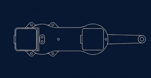

Project References & Sources
The following resources were utilized to build the architecture and interface of Articulator.
| Component / Concept | Source Link |
|---|---|
| Navigation Bar Design | YouTube Tutorial |
| Coordinate Mapping (Div logic) | YouTube Tutorial |
| CSS ::after/::before & Underline Effects | YouTube Tutorial |
| Glassmorphism (Glass Effect) | YouTube Tutorial |
| Home Page Circle Animation | YouTube Tutorial |
| General HTML/CSS Concepts | W3Schools & GeeksForGeeks |
| Typography & Icons | Google Fonts |
| Color Palette Selection | Figma Colors |
| Inverse Kinematics | how to mechatronics |
More InDepth about the robot architecture
This is a 2DOF SCARA (Selective Compliance Assembly Robot Arm), which from its
name is a robot designed
specifically for assembly purposes on the X/Y plane. Normally, the industrial robot comes with 4DOF. Which
are the Z axis and the rotating axis around Z to enable a better orientation of the handled objects.

Top View